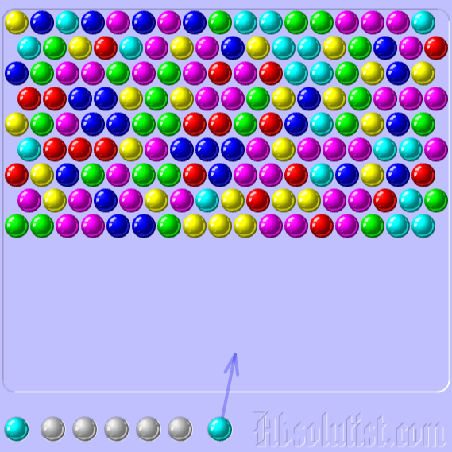
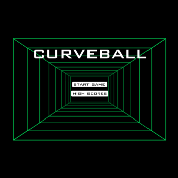
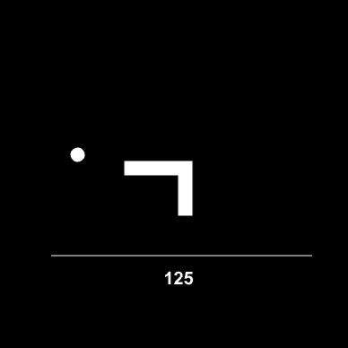

This will be my personal collection of websites that can be ran on older hardware. The Internet Archive (will soon) be a major contributor to this, as well as websites that haven't been updated since the early 2010s.
These website should ideally work with most browsers 2008 and newer.
| palemoon.org | The Pale Moon Project | Web browser focused on privacy |
| frogfind.com | FrogFind! | Search engine that can list and display websites optimized |
| openhandsetalliance.com | Open Handset Alliance | Consortium for mobile open standards |
| dpgraph.com | DPGraph | "Dynamic Photorealistic 3D Graphing Software for Math and Physics Visualization" |
| aliweb.com | Aliweb | Named the web's oldest search engine | example.com | Example.com | Website hosted for domain examples |
These games work with the Wii's Internet Channel
|  |
 |
 |
|---|---|---|
It could be certificates, it could be how some require HTTPS, but I'm not exactly sure.
Easy to remember for consoles that don't exactly have the best keyboards.
I believe only Internet Channel has Flash
I have heard that Flash software has a timebomb but I believe that is not the case with Internet Channel.
3000020: File format
application/x-shockwave-flash not
supported.
You will need a USB keyboard for the Wii console as the game uses arrow keys.